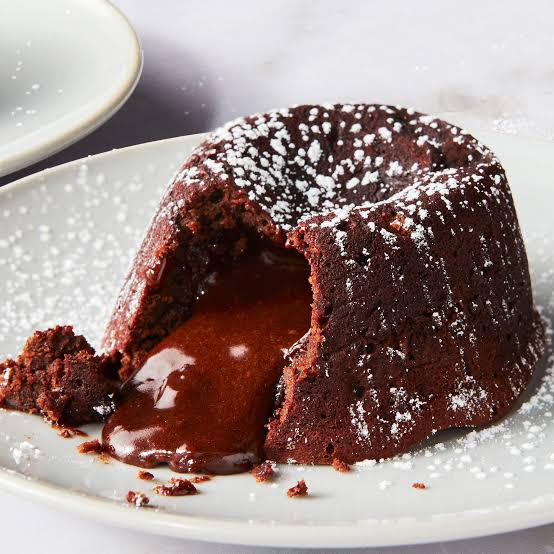

Get ready for this incredible chocolate lava cake! It's rich, moist,
and has a gooey chocolate center that will melt in your mouth.
Preheat the oven to 400 degrees F (200 degrees C). Grease and flour four 6-ounce ramekins.
Place chocolate and butter in the top of a double boiler over simmering water; heat and stir frequently,
scraping down the sides with a rubber spatula to avoid scorching, until mixture is melted, about 5 minutes.
Beat eggs and sugar in a large bowl with an electric mixer until pale and thick, about 5 minutes.
Mix in chocolate mixture, flour, cocoa powder, and salt until combined.
Pour batter into the prepared ramekins; place on a baking tray.
Bake in the preheated oven until the sides are set but the middle is still jiggly, 10 to 13 minutes.
Cool for 5 minutes before serving.
Per Serving: 562 Calories 50g Fat 35g Carbs 11g Protein